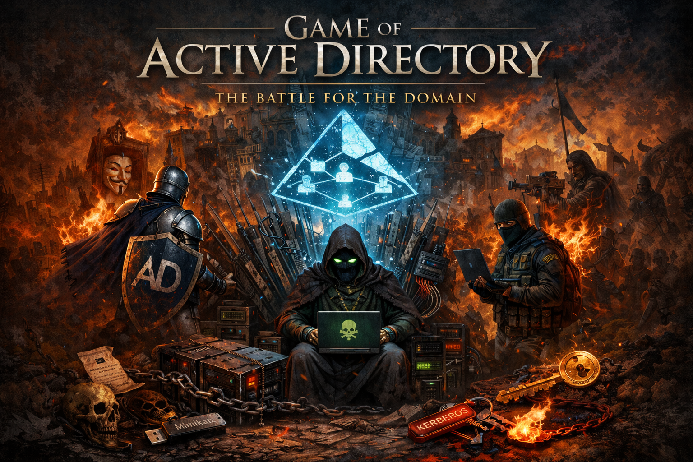
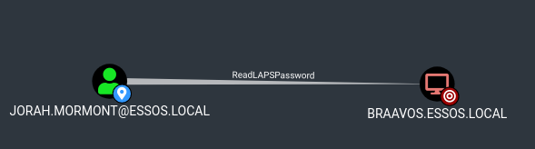

GOAD - Game Of Active Directory
Created: February 19, 2026 7:46 PM

Welcome to this comprehensive walkthrough of Game of Active Directory, a project widely known in the industry as GOAD. Before I dive into the protocols and exploitation techniques that define this lab, I must first extend my immense appreciation and full credit to MayFly, the visionary architect behind this environment. The complexity and realism of the SevenKingdoms forest are unparalleled, providing a critical foundation for any security professional looking to master the intricacies of an Active Directory forest. I encourage everyone to explore the original project at the official documentation site.
I discovered the GOAD project almost by chance during a late-night search for a resource that could truly challenge my understanding of both attacking and defending Active Directory. I wanted a project that moved beyond simple, single-host exploits and into the realm of complex trust relationships and protocol nuances. Finding GOAD was a pivotal moment in my training as it provided the perfect sandbox to refine the methodology I use in professional engagements.
This document originally started as a collection of personal field notes, a way for me to structure my own studies and document my progression through the AD attack surface. It was never intended to be a public release, but after sharing sections with colleagues and friends, I was encouraged to publish it as a full walkthrough. Please note that this is not an official GOAD guide. It represents my personal methodology and interpretation of the attacks. For those who prefer a strict adherence to the default lab structure without deviations, I highly recommend following MayFly’s official walkthrough.
An operation of this scale requires a reliable ecosystem. I want to give a special shout-out to the Ludus team for their incredible work in simplifying the deployment of complex home labs. Their platform made spinning up this multi-forest environment seamless, and if you are looking to install GOAD yourself, I strongly recommend utilizing their provider. You can find their installation guide here.
I must also recognize the NetExec team. You can find their essential work and detailed wiki at netexec.wiki. NetExec has become my primary choice for navigating the diverse services within the Windows ecosystem. I strongly recommend that any aspiring operator spends time in the NetExec Labs as well. These labs were fundamental to my growth, and I have personally contributed several walkthroughs to the project after completing their challenges. I view those contributions as my way of supporting the developers who have built the tools that make our work possible.
It is critical to understand that the GOAD environment runs on modern operating systems, specifically Windows Server 2016 and 2019. While these systems are intentionally vulnerable in many areas, modern Microsoft security defaults often mitigate historic attack vectors out of the box. Attacks such as Group Policy Preferences (GPP) decryption, Anonymous LDAP Binding, or Tombstone Enumeration and many others that you will see ahead, often rely on legacy misconfigurations that no longer exist by default in a fresh 2019 install.
If you wish to follow this guide 100%, we will occasionally need to "set the stage." Throughout the walkthrough, I will demonstrate how to manually introduce specific vulnerabilities into the lab. These administrative actions allow us to simulate the "operational debt" frequently found in real-world enterprise environments that have evolved over decades, rather than clean, greenfield deployments.To execute these structural changes, we must utilize the high-privileged infrastructure accounts generated during the initial lab deployment. Depending on how you installed your environment, you must rely on one of the following credential sets to act as the 'Architect' when required:
- Ludus Deployment: User:
localuser| Pass:password - Standard (Mayfly/Vagrant) Deployment: User:
vagrant| Pass:vagrant
Architecture Note

<em>Operator's Note:The architectural diagram above reflects the standard structure designed by Mayfly. Since I’ve deployed via Ludus, our IP range will differ (utilizing the 10.4.10.0/24 subnet), but the logical relationships, trusts, and server roles remain identical.